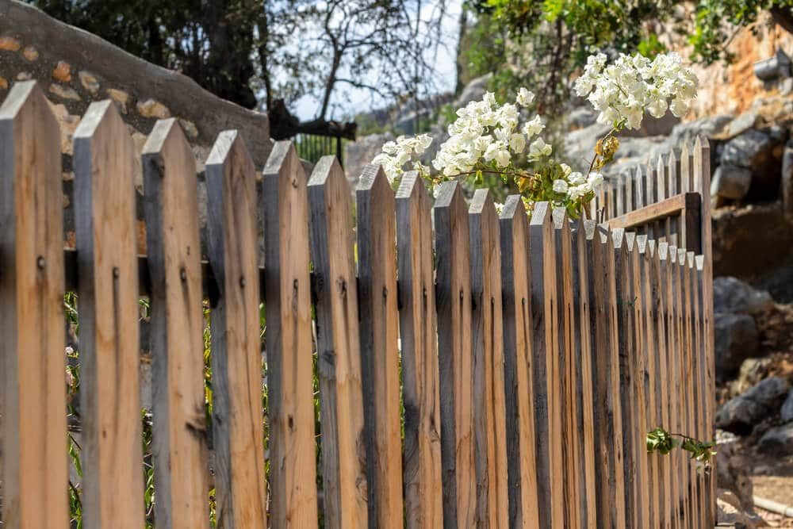

In This Guide
- Treated pine, cedar, and cypress are the practical leaders for Louisiana fences, each with a different balance of price and natural resistance.
- Redwood, Douglas fir, and oak are workable but less common here, and each has trade-offs in cost, workability, or decay resistance.
- Fence style matters as much as species, since picket, shadowbox, and split rail designs all ask different things of the wood.
- Any wood fence needs regular cleaning and a fresh finish every year or two to keep moisture and sun from wearing it down.
There is no single best fence wood. There is a best wood for your yard, your budget, and the look you want. Louisiana adds its own conditions, with heavy rain, high humidity, termites, and storm wind, and some woods handle them better than others.
This roundup from Big Easy Fence compares the woods people most often ask about for a wood fence, then matches them to popular fence styles and explains what upkeep to expect.
The Woods Compared
Each species has strengths and weak spots. This table gives a quick view, and the sections below explain each one.
| Wood | Rot Resistance | Relative Cost | Notes |
|---|---|---|---|
| Treated Pine | High, when treated | Lowest | Standard in Louisiana, and needs sealing |
| Cedar | Good, naturally | Moderate to high | Fine grain, warm color, and soft |
| Cypress | Good, naturally | Moderate to high | Grows locally, and grade and supply vary |
| Redwood | Good, naturally | High | Shipped in from the West Coast |
| Douglas Fir | Fair, unless treated | Moderate | Strong, with less local supply |
| Oak | Varies by type | Moderate to high | Heavy and hard to fasten |
Wood Species in More Detail
Pressure-Treated Pine
Southern yellow pine treated with preservatives is the go-to for most fences in this region. It resists rot and insects, costs the least, and is available everywhere. It needs sealing or staining to slow warping and graying, and posts should be rated for ground contact.

Cedar
Cedar resists decay and insects on its own and has a fine grain and warm color. It is lighter and softer than pine, so it is easy to work but dents and splits more readily. It costs more per board than treated pine.
Cypress
Cypress is a Louisiana native, and its heartwood resists rot and insects naturally. It is strong yet easy to work. Supply and grade vary, so ask your installer what is available and at what price.
Redwood
Redwood is durable and known for its rich color, but it is one of the pricier options. It grows on the West Coast, so it usually travels a long way and costs more here. It suits projects where looks and budget both allow it.
Douglas Fir
Douglas fir is strong and takes paint well, but it resists decay less than cedar or cypress. It works best when treated or sealed carefully, and it is less common in local yards.
Oak and Other Hardwoods
Oak is sturdy and long-lasting when it is the right type, but it is heavy, hard to cut and nail, and less common for fences. Some oaks rot quickly outdoors, so check the type before you buy.
Matching the Wood to the Fence Style
Style changes what a fence asks of its wood. These three show the range.
Picket Fences
Picket fences are classic and usually built from cedar or pine, then painted or stained. Every picket has its own edges and end grain, so each board needs sealing. That makes a picket fence more work to maintain than a solid design.
Shadowbox Fences
Shadowbox fences alternate boards on either side of the rails, which gives privacy while letting light and air through. Cedar is a common choice because it resists rot and looks good. The trade-off is a higher price than a basic picket fence.
Split Rail Fences
Split rail fences suit rustic and country-style properties. They cost less and go up quickly, but the wide gaps give little privacy, so they work best for boundaries, not screening.
If you want to see more styles, our guide to different types of wood fences in New Orleans shows the options.
The Pros and Cons of Wood
What Wood Does Well
- Looks. Wood comes in many styles and finishes, and it fits traditional and modern homes alike.
- Price. It usually costs less upfront than vinyl or aluminum, especially in treated pine.
- Flexibility. You can stain it, paint it, and repair it board by board.
What to Plan For
- Upkeep. Wood needs cleaning and a fresh finish every year or two to resist moisture and sun.
- Pests. Termites and carpenter bees target wood, so watch for damage near the base and along rails.
- Movement. Boards warp, shrink, and crack as they dry and weather.
Keeping a Wood Fence in Shape

- Inspect regularly. Look for rot, cracks, loose boards, and leaning posts, and fix small problems early.
- Clean it. A soft brush and soapy water remove dirt and mildew. Rinse off all of the soap.
- Refinish on schedule. Apply stain or sealer every one to two years, depending on sun and rain exposure.
Which Wood Lasts Longest?
The species matters, but so do drainage, ground contact, and upkeep. Cedar and cypress resist rot on their own, and treated pine resists it through its preservatives. Any of the three, well maintained, can serve a Louisiana yard for many years.
Picking the right wood is easier with someone who has seen how each one behaves locally. Our residential fencing team can talk through the options and give you a free estimate.
Ready to Choose a Wood for Your Fence?
Tell us about your yard and the look you want, and we will suggest woods and styles that suit it.